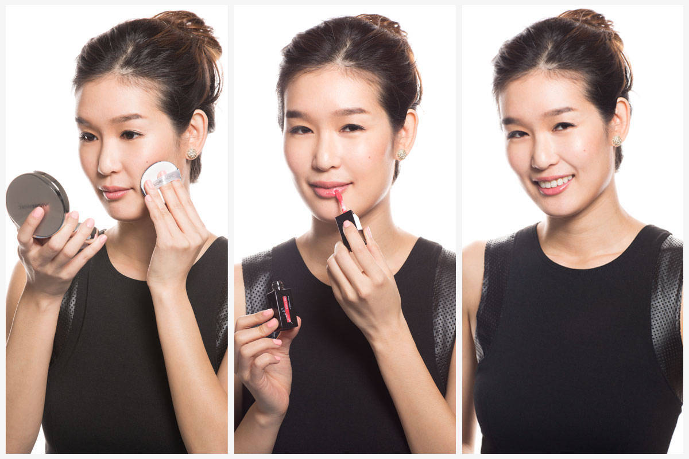
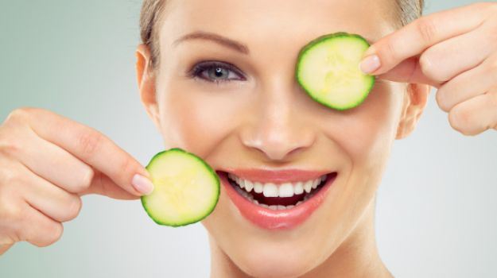
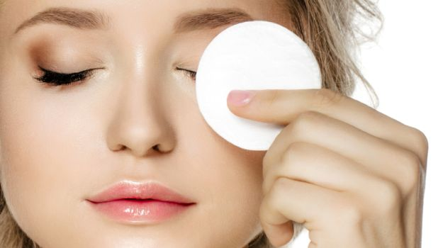
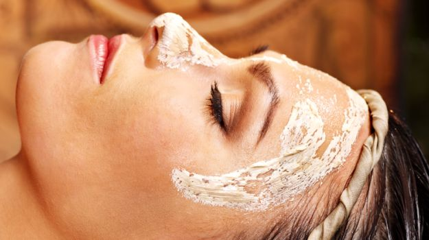
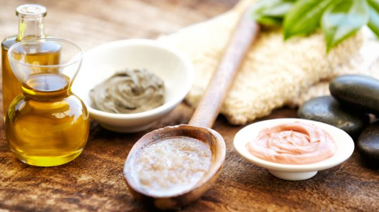
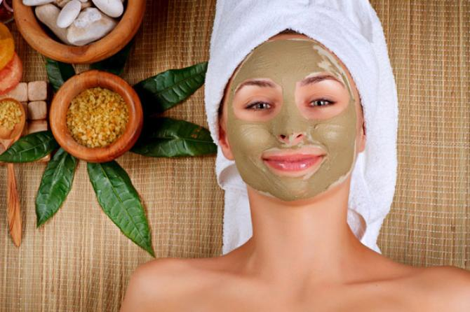

MOST READ BLOGS
Face Care Tips: 10 Dos and Don'ts for Naturally Beautiful Skin

The flawless, blemish and acne-free skin that you've always desired is no more a dream, but reality.
Here are brilliant face care tips to get that glow you've always wanted. Browse through our good looks secrets, tackle your skincare issues and follow our tricks regularly to get beautiful skin naturally. Excited, happy or stressed, it's your face that gives you away. So we've rounded up expert tips on daily skin care, keeping blemishes at bay and enhancing your natural good looks. Whether you have time for intensive skin care or not, pamper yourself by acing the basics.
Why God, why? Is flawless skin just too much to ask for? A late night leads to dark circles
in the morning. Got an upcoming party? Oh wait, I spy a zit. Yes yes, we are well aware of the basic CTM technique Cleanser-Toner-Moisturizer. We try every new face wash, sunscreen, anti-ageing cream that hits the market. If dry skin and dead skin, oily skin and patchy skin weren't enough - you now have combination skin! And we are ever so willing to try anything under the sun to get beautiful skin. But it is not an overnight miracle.
Lucky for you, we make face-care easy.
10 Dos and Don'ts for Beautiful Skin
1. The Golden Rule
Do: Make sure you always (and we mean always) remove your makeup before hitting the sheets. The skin needs to breathe overnight. And makeup prevents that, as leaving it on overnight clogs the pores which may cause blemishes and/or blackheads. Don't possess a makeup remover? Just put some olive oil on a cotton pad and gently massage the oil onto your face to get rid of the makeup and dirt.
Don't: Forget that exfoliation is indispensable. At least once or twice a week, exfoliate your skin to remove the layers of dead skin, sure to leave you with a more healthy glow and brighter skin. You can also apply a paste of walnut in powder form with yogurt to exfoliate your skin, as the antioxidants present in walnuts help remove dirt and promote radiant skin.

2. Sun and Skin
Do: Apply sunscreen with SPF of at least 15 that blocks both UVA and UVB rays. Since a lifetime of sun exposure can cause wrinkles, age spots and other skin problems, you have to protect your skin from the sun. Make sure the label reads noncomedogenic or nonacnegenic so that the product does not tend to block pores.
Don't: Skip the sunscreen, whether it's cloudy or cold outside (no excuses). If you're heading to a beach or around reflective surfaces like snow or ice, lather your skin up with some more sunscreen with SPF of at least 30.
3. You are What You Eat
Do: Keep a note of what you put on your plate. Eat fresh fruits, greens, sufficient protein and vitamins. A diet rich in vitamin C and low in fats and sugar promotes radiant skin. Consider a low-sugar diet, which can keep insulin levels down, allowing cells to maintain a healthy balance.
(Food that's Good for Your Skin)
"Don't: Eat spicy and fermented foods, salt, citrus fruits, fried food. Instead favour blander foods such as rice, oatmeal and applesauce, advises American author and Ayurvedic physician, Vasant Lad, in The Complete Book of Ayurvedic Home Remedies.
4. Sweat It Out!
Do: Exercise regularly. Running, jogging and yoga will give your body the necessary blood circulation, and also accelerate the cleansing process of your entire body. You will notice a glow on your face after working out. Racing against time? Just take a brisk walk around the block.
Don't: Skip skincare before and after a workout. Apply a toner to help minimize oil production before heading out. Exfoliate after, and then apply shea butter or olive oil to moisturize the skin.
5. Prettiness Sleep
Do: Try to sleep at least 8 hours every night. If you don't get enough shut eye, your skin gets tired just like you - it sags and you get bags. So don't risk it. You can also apply honey on your face twice or thrice a week to naturally soothe and heal your skin.
Don't: Forget to wash and moisturize your face before going to bed, recommends Dr. Rahul Nagar, Dermatologist, Max Hospitals. For dry skin, use milder cleansers that are free from alcohol. Apply lots of moisturizer, and avoid hot water as it dries out the skin excessively.
6. H2O to The Rescue
Do: Hydrate yourself. Drink lots of water daily, at least 8 glasses if not more. Also, eats fruits and vegetables that have a high water content such as watermelon, cucumber, orange, strawberry, grapefruit and cantaloupe. Ayurvedic physician, Vasant Lad recommends to drink water from a blue coloured bottle, since it has a cooling effect.
Don't: Ignore rose water. It helps prevent and reduce eye puffiness in the morning, maintains pH balance and naturally hydrates your skin if you spritz it on during the day.
7. Goodbye Acne
Do: Wash your face with warm water, three times a day, and gently massage your face in circular motions, ensuring that the cleanser contains alpha hydroxyl acid or beta hydroxyl acid. Face packs that contain multani mitti (fuller's earth) work really well too. After cleansing, pat dry and apply a lotion which contains benzoyl peroxide, suggests Dr. Zaheer Ahmed, Dermatologist, Max Hospitals. Benzoyl peroxide appears to be effective due to its antibacterial actions.
Don't: Pop pimples because it can lead to more swelling, redness, and even scarring. Feel a pimple is on its way? Just clean the area with rose water, and place a chilled green tea bag for 10 minutes. Also, if you wear glasses or sunglasses, make sure you clean them frequently to keep oil from clogging the pores around your eyes and nose.
8. Go Back to Your Roots
Do: Use Ayurvedic scrubs to nourish the skin, and help it breathe better. Luckily for you, everything you need is already in your kitchen. 2 tbsp chickpea flour, 1/2 tsp turmeric powder, a pinch of camphor and sandalwood with some rose water/milk/water is your perfect skincare pack. Yes, the secrets of good looks lies in ancient Ayurveda.
Don't: Neglect the basics. Make Sudarshan Kriya your good looks mantra. Yes, it's that easy. Just breathing right could rid you of spots and pimples. Nidhi Gureja, Art of Living, says Sudarshan Kriya
is a breathing technique which incorporates specific natural rhythms of the breath that harmonize the body, mind and emotions. This helps releasing accumulated stresses, and each individual's experience is different.

9. Spa Day Everyday?
Do: Have a regular skin care regimen. For dry skin, use a fresh cherry mask. Apply the pulp of fresh cherries on your face before going to bed. Leave for 15 minutes and wash with lukewarm water, adds American author Vasant Lad.
Don't: Forget to pamper yourself. A gentle facial massage with oils could work wonders. Depending on your skin type, choose oils from mustard, coconut, almond or Kumkadi as they are excellent nourishing agents which help to get glowing skin. Better still switch on some soothing instrumental music. After 20 minutes, what do you have? Beautiful skin and a relaxed you.
10. Healthy Habits
Do: Take out time for yourself, and try to avoid stress as much as possible. Have you ever noticed that when you are stressed, you tend to break out more? This is because stress causes your body to produce cortisol and other hormones, making the skin more oily. Practice stress management techniques like breathing exercises, yoga and meditation. The more you meditate, the more you radiate.


For just 5 minutes a day, perform a few facial exercises. You can jut out your lower lip in such a way that wrinkles are created on the chin, then lower your chin to your chest. Another exercise that works wonders is to look up towards the ceiling and pout. It stretches out the muscles making the skin more firm. 18 till I die, why not?
Youre dressed to perfection, yet you need something to complete the look. Your smile! While we spend so much time and energy on honing our bodies and looks, we forget to express our inner joy and happiness. Keeping a smile on your face will help maintain the tone of your facial muscles and skin. People may say you look 10 years younger than you are!, adds the Ayurvedic physician, Vasant Lad.
Credits to: food.ndtv